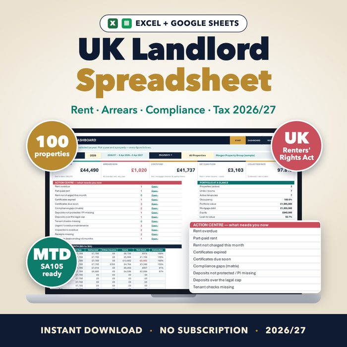
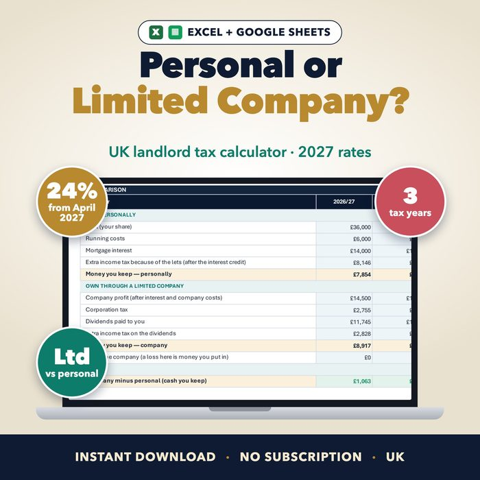
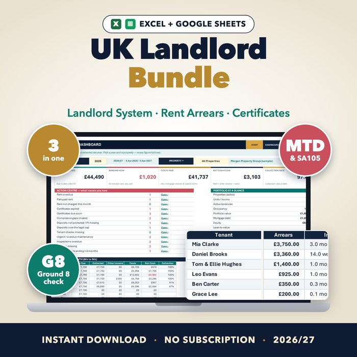
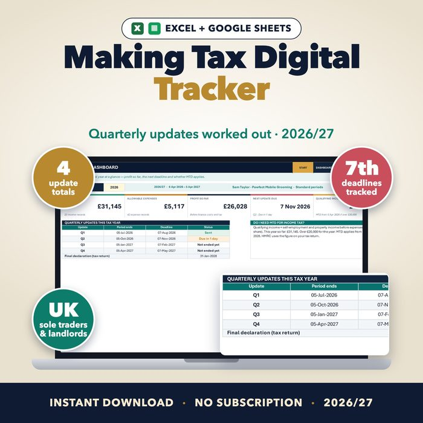
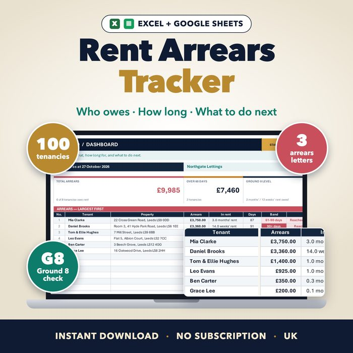
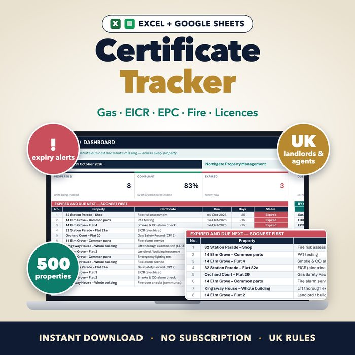
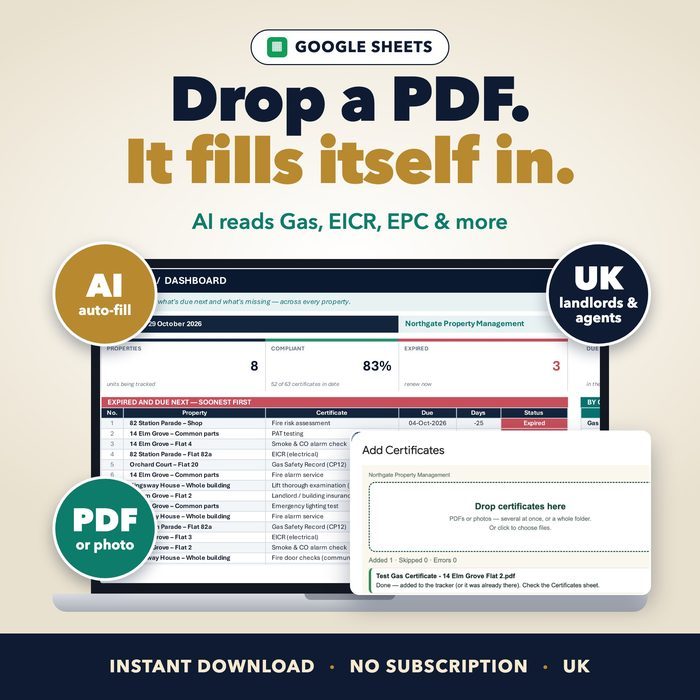
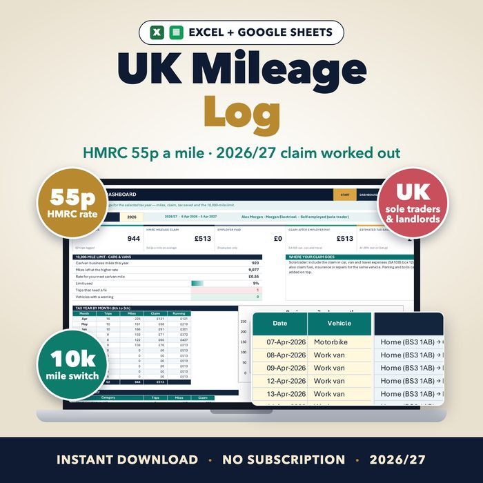
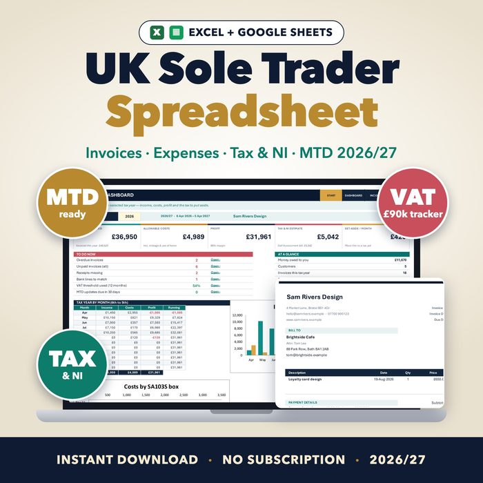
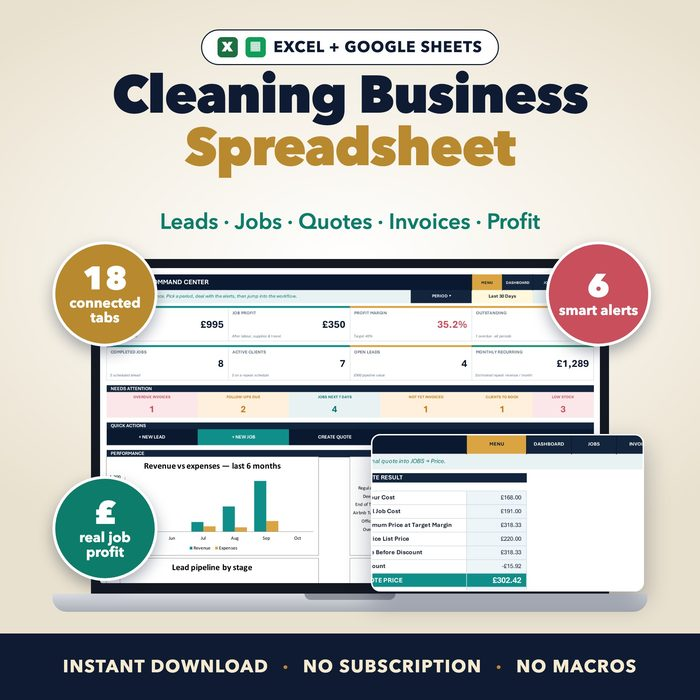

Spreadsheets that do the sums for UK landlords and small businesses
Rent and arrears, landlord certificates, Making Tax Digital, SA105 and SA103 figures, HMRC mileage and cleaning business quotes. You type the basics; the rest fills in. Excel and Google Sheets, one-off price, no subscription.
See the spreadsheetsEtsy shopFree calculator
Landlord tax calculator: how much more from April 2027?
Free calculator: see the extra income tax on your rental profit when property rates rise to 24% / 44% / 49% from April 2027, and a rough personal vs limited company comparison.
Spreadsheets

UK Landlord Spreadsheet 2026/27
Rent, arrears, compliance, SA105 tax and Making Tax Digital for UK landlords, in one Excel and Google Sheets workbook.
See what it does →
Personal vs Limited Company Calculator for UK Landlords
Type your rent, costs, mortgage interest and other income and see which route leaves you more money over three tax years, with the April 2027 property rates built in.
See what it does →
UK Landlord Bundle
The UK Landlord System, Rent Arrears Tracker and Property Certificate Tracker in one download, for less than buying them separately.
See what it does →
UK Making Tax Digital Quarterly Tracker
Keep your Making Tax Digital records in one spreadsheet: every sale, rent payment and bill sorted into HMRC's categories, with the totals for each quarterly update.
See what it does →
UK Rent Arrears Tracker
See who owes rent, how much and for how long. Rent is charged for you, arrears are aged, the Ground 8 level is checked and arrears letters are written.
See what it does →
UK Property Certificate Tracker
Keep every landlord certificate in date: gas safety, EICR, EPC, fire, licences and more, for every flat, shop and block.
See what it does →
AI Certificate Reader for Google Sheets
Drop a certificate PDF and the tracker reads it and fills in the row: property, certificate type, dates, result, company and certificate number.
See what it does →
UK Mileage Log Spreadsheet 2026/27
Log business trips at HMRC's 55p rate and let the spreadsheet work out your mileage claim for the 2026/27 tax year.
See what it does →
UK Sole Trader Spreadsheet 2026/27
Invoices, expenses, mileage, income tax, National Insurance, VAT and Making Tax Digital for self-employed people in the UK.
See what it does →
Cleaning Business Spreadsheet
Leads, clients, jobs, quotes, invoices, payments and real job profit for cleaning businesses, in Excel and Google Sheets.
See what it does →Guides
Making Tax Digital for landlords: what changed in April 2026
Who must use Making Tax Digital for Income Tax, the £50,000, £30,000 and £20,000 thresholds, the quarterly update deadlines and what records to keep.
HMRC mileage rates 2026/27: 55p a mile explained
The approved mileage rates from 6 April 2026: 55p for cars and vans, 25p after 10,000 miles, 24p for motorcycles and 20p for bicycles, and who can claim them.
Rent arrears and Ground 8 after 1 May 2026 (England)
How the Renters' Rights Act changed Ground 8: the new 3 months or 13 weeks arrears level, the 4-week notice, Universal Credit delays and how to keep records.
Landlord certificates checklist: how often each one is due
Gas safety every 12 months, EICR every 5 years, EPC every 10 years, smoke and CO alarms and the other checks UK landlords track, with what to give tenants.